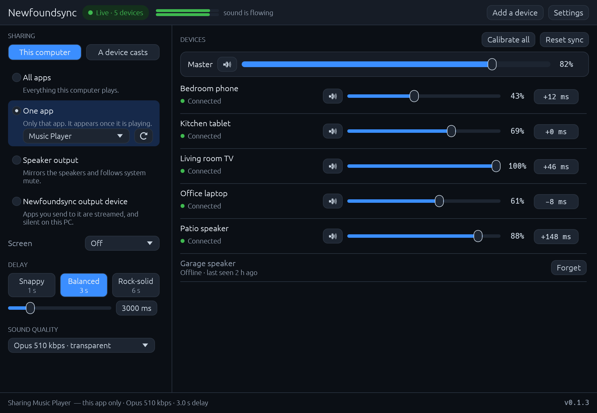
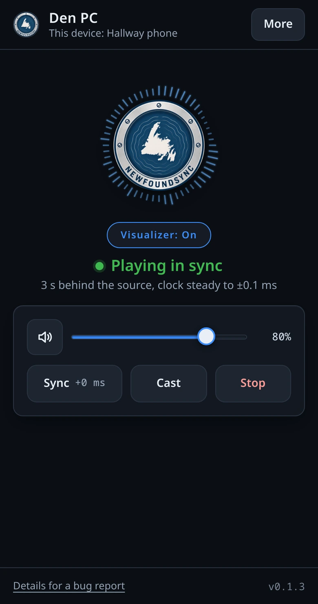
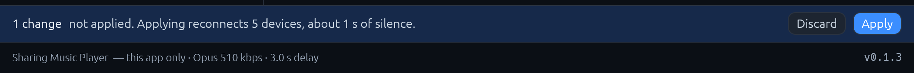
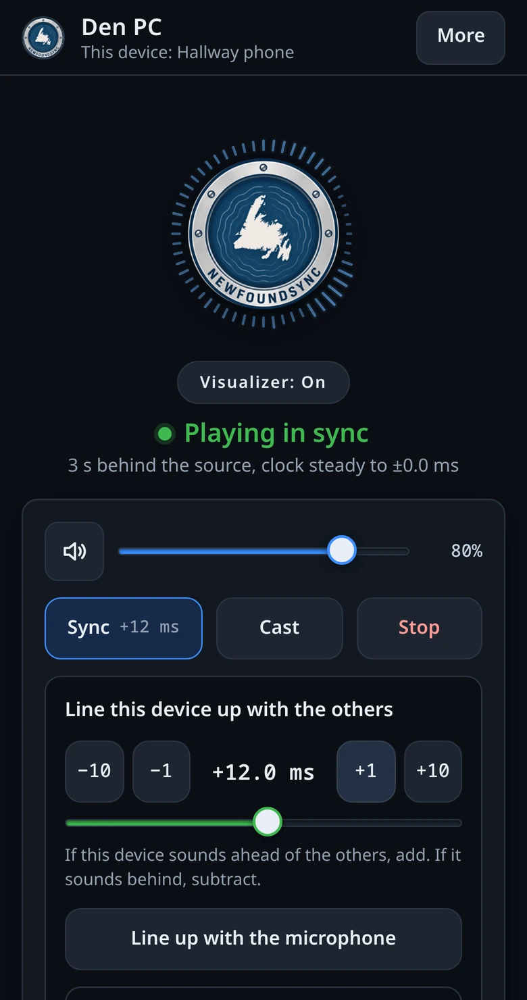
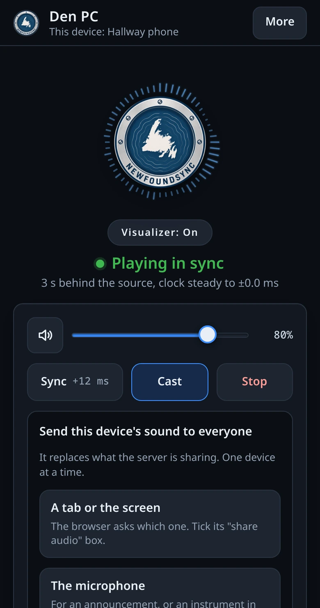
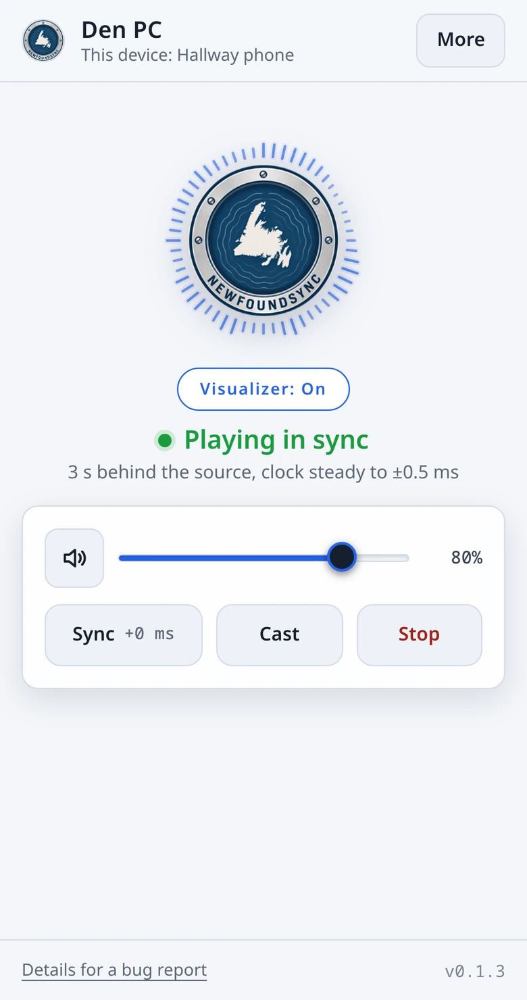

All apps
Everything the computer plays, system sounds included. On Windows this keeps streaming even while the PC itself is muted.
Windows · Linux · macOS
Multi-room audio from one computer
Newfoundsync sends your computer's sound, and its screen if you like, to every phone, tablet, laptop and TV on your home network. There is nothing to install on them. Each one opens a link in its browser and plays in time with all the others.


How it works
Run Newfoundsync on the computer that has the music. Choose what to share: everything it plays, a single app, or its screen as well.
The window shows an address and a QR code. Open it in a browser on any device on the same network, accept the one-time certificate warning, and tap Start.
Set each device's volume from the server window. If a TV or Bluetooth speaker runs late, nudge it a millisecond at a time, or let a microphone line it up for you.
Sound reaches each device at a different moment, and a TV or a Bluetooth speaker adds a delay of its own on top. Left alone, every doorway in the house has an echo in it.
Newfoundsync stamps each 20 ms of audio with a time on the server's clock. Every device learns that clock, holds the audio in a buffer, and plays it at the stamped moment. They all reach that moment together.
The trade-off is the wait. Everything plays 1 to 6 seconds after the computer made it (you pick). That suits music, podcasts and films, where the picture is held back by the same amount. It does not suit games or calls.
The server window New in 0.1.4
The window used to be a setup screen. It is now the thing you leave open: the devices in the house take up most of it, and what you are sharing sits in a column on the left.
The chip in the header is checked against the audio itself, so it can say Live, Nothing playing, Waiting for a cast or Sound stopped. The meter beside it shows the sound going into the stream.
Name, health, mute, volume and the sync offset the device is really using. Double-click a name to change it. Click the offset for ±1 and ±10 ms nudges.
Names, volumes and offsets survive a restart. Devices that are not connected stay in the list as offline until you forget them.
Switching source, delay or quality waits in a bar that tells you how many devices will reconnect, with Discard and Apply.

The page each device opens New in 0.1.4
The listening side is a web page served by your own computer. It works in current Chrome, Edge and Safari (iOS 17 or later), and can be added to a phone's home screen.



What you can share
Everything the computer plays, system sounds included. On Windows this keeps streaming even while the PC itself is muted.
Windows · Linux · macOS
Only the music player, or only the browser. Notification pings and everything else stay on the computer.
Windows · Linux
A mirror of what the speakers are playing. It follows the system mute, so muting the computer silences the house.
Windows · Linux · macOS
Tick an app and it is streamed and goes quiet on the computer, so you do not hear it once from the desk and again, a moment later, from the room. The ticks are remembered.
Linux
The computer shares nothing of its own and relays whatever a browser sends up: a tab, a screen, or a microphone for an announcement.
Windows · Linux · macOS
720p to 2160p at 30 or 60 fps in royalty-free AV1 or VP9, held to the same clock so sound and picture agree. Ultrawide screens keep their shape.
Windows · Linux · macOS
Platforms
Listening works the same everywhere, because it is a web page. These differences are about the computer doing the sharing.
| Windows | Linux Flatpak | macOS Apple Silicon | |
|---|---|---|---|
| Whole-system audio | Yes | Yes | Yes macOS 14.2 or later, no extra driver |
| One app's audio | Yes by app or window | Yes | No |
| Output device that silences the app locally | No | Yes new in 0.1.4 | No |
| Screen sharing | Yes whole screen or one window | Yes through the desktop's screen-share prompt | Yes needs the Screen Recording permission |
| AV1 encoding on the GPU | Yes where the GPU has an AV1 encoder | Yes Intel Arc and newer, AMD RX 7000 and newer, NVIDIA RTX 40 and newer | No encodes on the CPU |
| Video on the CPU | AV1, VP9 | AV1, VP9 | AV1, VP9 |
| Newest build | 0.1.3 | 0.1.4 | 0.0.10 |
Under the hood
/health
endpoint. Each device's dropped-frame count is on the /status page.Download
Only that one. Everything else just needs a browser.
0.1.3 · 64-bit · 31 MB
Download .exeA single program, with no installer. Windows may warn about an unrecognised app the first time you run it.
Older than 0.1.4, so it does not have the server window and device page pictured above yet.
0.1.4 · x86-64 Flatpak · 20 MB
Download .flatpakOpen the file with your software centre, or install it from a terminal:
flatpak install --user Newfoundsync-0.1.4.flatpak0.0.10 · Apple Silicon · 12 MB
Download .pkgIt is not signed, so right-click the file and choose Open. Screen sharing and sound capture need the Screen & System Audio Recording permission.
Older than 0.1.4, so it does not have the server window and device page pictured above yet.
All releases and release notes Build from source .deb and .rpm packaging for a headless server
Questions
Browsers only decode audio this way on a secure (HTTPS) page, even for an address inside your own house. Newfoundsync makes its own certificate the first time it runs, and no outside authority has vouched for it, so the browser asks you to confirm once per device. Choose Advanced, then proceed. The certificate is kept, so it does not ask again.
The delay is the buffer that makes the sync possible and hides Wi-Fi hiccups. You choose it: Snappy (1 s), Balanced (3 s) or Rock-solid (6 s), up to 15 s. Shared video is delayed by the same amount, so a film still matches its sound. For games and calls, use something built for low latency.
Usually the network. Every device has to be on the same network as the computer, and guest or office Wi-Fi often stops wireless devices from seeing each other. If a wired computer can open the address and a phone cannot, that is the cause. A phone hotspot is a quick way to check.
Bluetooth speakers, TVs and soundbars add delay after the browser has handed the sound over, and they do not report it. Open Sync on that device and step it until it sits with the room, or use Line up with the microphone. The offset is remembered for that device.
The computer's own speakers play it straight away and the synced devices play it a few seconds later. Mute the computer and share with All apps on Windows, or on Linux use the Newfoundsync output device, which silences the app locally. To listen at the computer as well, open the link in a browser there like any other device.
No, and it is not meant to. It is a tool for a network you trust: there are no accounts and no access control beyond being on that network. Do not forward its port to the outside.
Yes. newfoundsync --headless runs the server from command-line flags, and
the /status page shows who is connected. There is a systemd unit in the
repository for a machine that should share all the time.